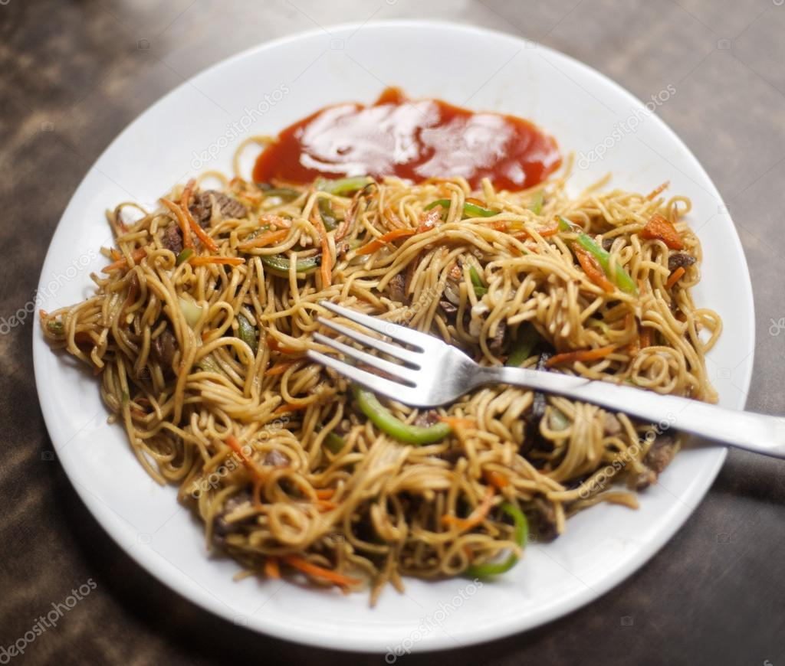
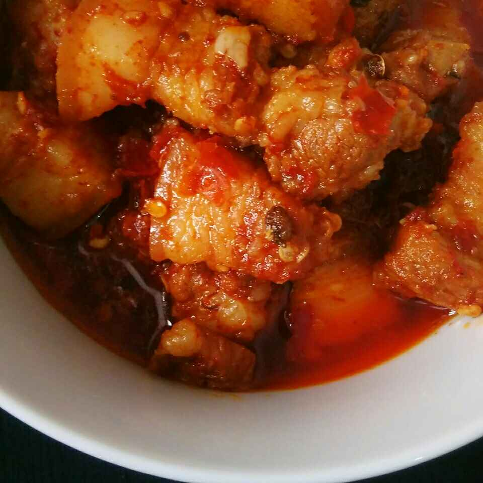

CHOW-MEIN
I am not a fan of fast food, but if i get to visit a restaurant or a street food stall, I definitely go for noodles, popularly known as chowmein.
Chow Mein is a Chinese stir-fried noodles dish that is made both with and without meat. Chow means stir-fried and Mein means noodles. It's very popular in India and a lot of other countries too, and most of them have a local version of this delicious noodle dish.
- Noodles
- Vegetables: The most commonly used vegetables in Chow Mein are cabbage, capsicum, carrots, spring onion. You can also use bean sprouts, French beans, tofu, mushrooms, or any other vegetable you like in stir-fried noodles
- Sauce/ condiments: The sauces generally added in Chow Mein are soy sauce, chili sauce, vinegar, and oyster sauce. In India, oyster sauce is not used in this stir-fried noodle dish and also since this is a vegan recipe, I have skipped that. I have added a small quantity of tomato ketchup, the way it’s done in Indo Chinese style noodles. You won’t be able to taste the ketchup but will add a nice rich sauce coating on noodles.
The items required to make this item are:
PORK (Curry to be specific)
I don't know why I felt of keeping this item in my second section but yeah thinking about this makes me hungry for sure. Any main meal I prefer to have in an restaurant makes me feel full and satisfied if I have pork.
It’s the most commonly consumed red meat worldwide, especially in eastern Asia, but its consumption is forbidden in certain religions, such as Islam and Judaism. For this reason, pork is illegal in many Islamic countries. It is often eaten unprocessed, but cured (preserved) pork products are also very common. These include smoked pork, ham, bacon, and sausages. Being high in protein and rich in many vitamins and minerals, lean pork can be an excellent addition to a healthy diet.